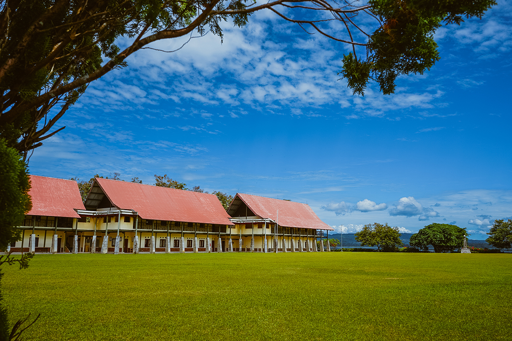
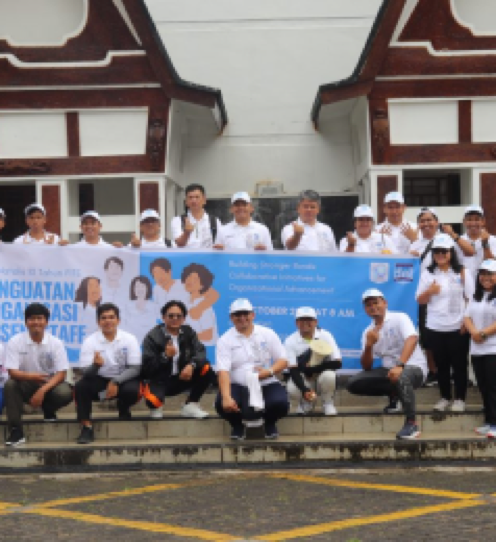
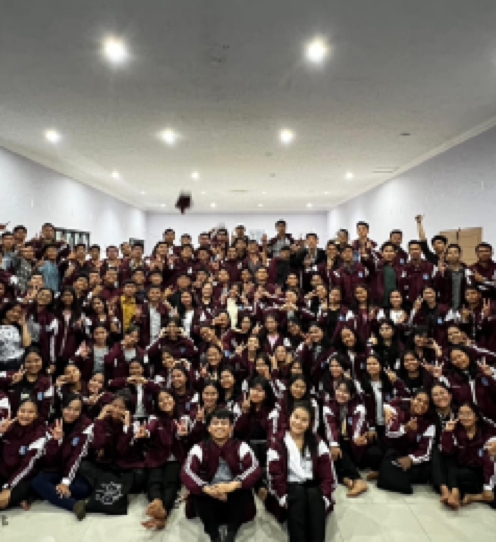
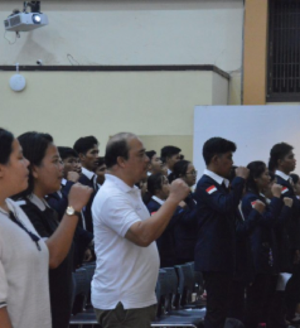
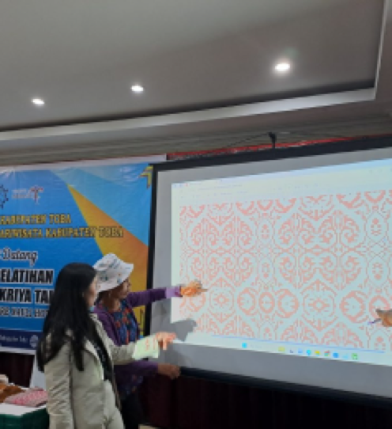
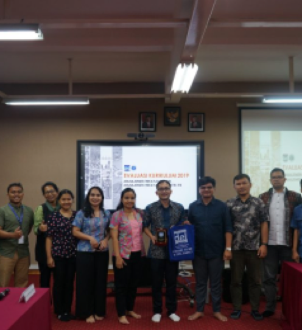
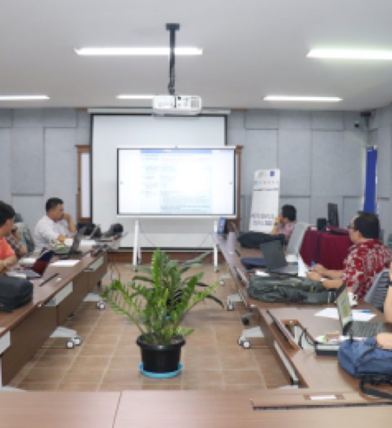

PENGUNGUMAN
Pengunguman
Berita Terkini
KegiatanBerita SPMB


Dies Natalis ke X Fakultas Informatika dan Teknik Elektro IT
DelSelengkapnya
IT Del Menjadi Tuan Rumah 29th IEEE ICT Conference
Selengkapnya

Selengkapnya
Informasi PMB Jalur Sertifikat Ujian Tulis Berbasis Komputer
(Sertifikat UTBK) 2023/2024 & Jadwal Pelaksanaan Kegiatan
Selengkapnya

Selengkapnya
Selengkapnya

399 Mahasiswa IT Del Mengikuti Retreat untuk Meningkatkan Karakter
3M (MarTuhan,Marroha,Marbisuk)Selengkapnya

Rapat Koordinasi Keluarga Mahasiswa Organisasi IT Del Periode
2023/2024Selengkapnya


Evaluasi Kurikulum Program Studi Manajemen RekayasaSelengkapnya

Monitoring dan Evaluasi (Monev) Internal Program Matching Fund
(MF) Vokasi Tahun 2023Selengkapnya
DiTenun Berikan Pelatihan Subsektor KriyaSelengkapnya
Berita Terkini Lainnya
Kegiatan Lainnya
Berita SPMB
>4 Fakultas
150 Mitra
 Depan gerbang Institut Teknologi Del, Sitoluama, Kec. Balige,
Toba, Sumatera Utara 22381
LPPM
Depan gerbang Institut Teknologi Del, Sitoluama, Kec. Balige,
Toba, Sumatera Utara 22381
LPPM
Mitra Kerja Sama Dengan IT Del
Koperasi
Pusat Bantuan IT Del
Satutata
Lowongan Kerja
Testimoni
Fakta dan Angka
Del Inspirasi Selangkah Lebih maju
Dosen IT Del
Staff IT Del
Penerimaan Mahasiswa Baru
Fakta dan Angka
Del Inspirasi Selangkah Lebih maju
Dosen IT Del
Staff IT Del
Penerimaan Mahasiswa Baru
Mitra Kerja Sama Dengan IT Del
Koperasi
Pusat Bantuan IT Del
Satutata
Lowongan Kerja
 Kuliah Umum oleh Konsulat Amerika Serikat terkait Suku Asli
Amerika SerikatPada hari Jumat, 24 November 2023 Institut Teknologi Del menerima
kunjungan dari Ibu Kristy Mordhorts (Konsulat Amerika Serikat di
Medan). Kunjungan ini disambut baik oleh IT Del yang diwakili oleh
Bapak Dr. Johannes Harungguan Sianipar, S.T., M.T. (Wakil Rektor I
Bidang Akademik dan Kemahasiswaan). “Kami sangat senang atas
kehadiran Ibu disini untuk sharing kepada mahasiswa kami, dengan
partisipasi mahasiswa juga kami berharap kegiatan ini berjalan
dengan baik”. Ujar Beliau.
Selengkapnya
Kuliah Umum oleh Konsulat Amerika Serikat terkait Suku Asli
Amerika SerikatPada hari Jumat, 24 November 2023 Institut Teknologi Del menerima
kunjungan dari Ibu Kristy Mordhorts (Konsulat Amerika Serikat di
Medan). Kunjungan ini disambut baik oleh IT Del yang diwakili oleh
Bapak Dr. Johannes Harungguan Sianipar, S.T., M.T. (Wakil Rektor I
Bidang Akademik dan Kemahasiswaan). “Kami sangat senang atas
kehadiran Ibu disini untuk sharing kepada mahasiswa kami, dengan
partisipasi mahasiswa juga kami berharap kegiatan ini berjalan
dengan baik”. Ujar Beliau.
Selengkapnya

 IT Del Ikuti Kegiatan KMI EXPO XIV di Bali Hingga Terima
Penghargaan Pendamping TerbaikPada tanggal 15-17 November 2023, Institut Teknologi Del turut
serta mengikuti kegiatan kompetisi KMI EXPO XIV 2023 yang
diselenggarakan oleh Belmawa di Universitas Pendidikan Ganesha,
Singaraja Bali.
IT Del Ikuti Kegiatan KMI EXPO XIV di Bali Hingga Terima
Penghargaan Pendamping TerbaikPada tanggal 15-17 November 2023, Institut Teknologi Del turut
serta mengikuti kegiatan kompetisi KMI EXPO XIV 2023 yang
diselenggarakan oleh Belmawa di Universitas Pendidikan Ganesha,
Singaraja Bali.KMI EXPO merupakan suatu wadah bagi mahasiswa untuk memperkenalkan bidang usaha yang dapat meningkatkan perkembangan aktivitas kewirausahaan serta ajang kompetisi yang diikuti oleh kelompok usaha yang masuk pada KMI Award sebagai kategori produk utama yang akan dipamerkan pada ajang KMI EXPO XIV 2023. Selengkapnya
Sampling Kemenyan Toba di Kabupaten Tapanuli Utara, Kabupaten
Humbang Hasundutan, dan Kabupaten Pakpak BharatTim Institut Teknologi Del yang terdiri atas Ymelda A. C.
Manurung, M.Sc. (Peneliti Genomik Herbal KHDTK IT Del), Roga
Florida Kembaren, M.Si. (Dosen Teknik Bioproses IT Del) dan Darwin
Silalahi, M.P. (Peneliti Genomik Hortikultura KHDTK IT Del)
melakukan pengambilan sampel daun kemenyan sebagai bagian dari
kegiatan penelitian “Pengungkapan Biodiversitas dan Mekanisme
Genetik Biosintesis Senyawa Terapeutik Tanaman Kemenyan
Menggunakan Analisis Genom” inisiasi kerjasama dengan Badan Riset
Inovasi Nasional (BRIN), selama 5 hari (13 – 17 November
2023).
Selengkapnya

 Wisuda 398 Lulusan Institut Teknologi DelPada Hari Sabtu 23 September 2023, Institut Teknologi Del
melaksanakan Wisuda untuk 398 Mahasiswa Sarjana dan Diploma.
Turut hadir Bapak Dr. Honoris Causa Ir. Airlangga Hartarto, MBA,
MMT (Menteri Koordinator Bidang Perekonomian Republik
Indonesia), Bapak Rionald Silaban (Direktorat Jendral Kekayaan
Negara), Bapak Jend. TNI (Purn.) Luhut Binsar Pandjaitan, M.P.A
(Ketua Pembina Yayasan Del), Ibu Intan Simanjuntak (Ketua
Pengurus Yayasan Del), dan tamu undangan lainnya. Kegiatan
Wisuda ini dilaksanakan di Gedung Serba Guna Yayasan Del dengan
tema “Fostering Collaboration and Innovation towards Research
Excellence”.
Selengkapnya
Bapak Gibran Rakabuming Raka Beri Kuliah Umum kepada Mahasiswa
IT Del terkait “Pemimpin Milenial”Pada Hari Sabtu, 18 November 2023 Institut Teknologi Del
menerima kunjungan Bapak Gibran Rakabuming Raka, sekaligus
menjadi pembicara pada Kuliah Umum dengan topik “Pemimpin
Milenial” kepada Mahasiswa/i Institut Teknologi Del.
Wisuda 398 Lulusan Institut Teknologi DelPada Hari Sabtu 23 September 2023, Institut Teknologi Del
melaksanakan Wisuda untuk 398 Mahasiswa Sarjana dan Diploma.
Turut hadir Bapak Dr. Honoris Causa Ir. Airlangga Hartarto, MBA,
MMT (Menteri Koordinator Bidang Perekonomian Republik
Indonesia), Bapak Rionald Silaban (Direktorat Jendral Kekayaan
Negara), Bapak Jend. TNI (Purn.) Luhut Binsar Pandjaitan, M.P.A
(Ketua Pembina Yayasan Del), Ibu Intan Simanjuntak (Ketua
Pengurus Yayasan Del), dan tamu undangan lainnya. Kegiatan
Wisuda ini dilaksanakan di Gedung Serba Guna Yayasan Del dengan
tema “Fostering Collaboration and Innovation towards Research
Excellence”.
Selengkapnya
Bapak Gibran Rakabuming Raka Beri Kuliah Umum kepada Mahasiswa
IT Del terkait “Pemimpin Milenial”Pada Hari Sabtu, 18 November 2023 Institut Teknologi Del
menerima kunjungan Bapak Gibran Rakabuming Raka, sekaligus
menjadi pembicara pada Kuliah Umum dengan topik “Pemimpin
Milenial” kepada Mahasiswa/i Institut Teknologi Del.Kunjungan ini disambut baik oleh Bapak Dr. Arnaldo Marulitua Sinaga, ST., M.InfoTech. (Rektor IT Del), Bapak dan Ibu Wakil Rektor dan Dosen IT Del dan mahasiswa/i IT Del juga siswa SMA Unggul Del. Dalam kunjungan ini turut hadir Ibu Selvi Ananda, dan Bapak Bobby Nasution (Wali Kota Medan). Selengkapnya